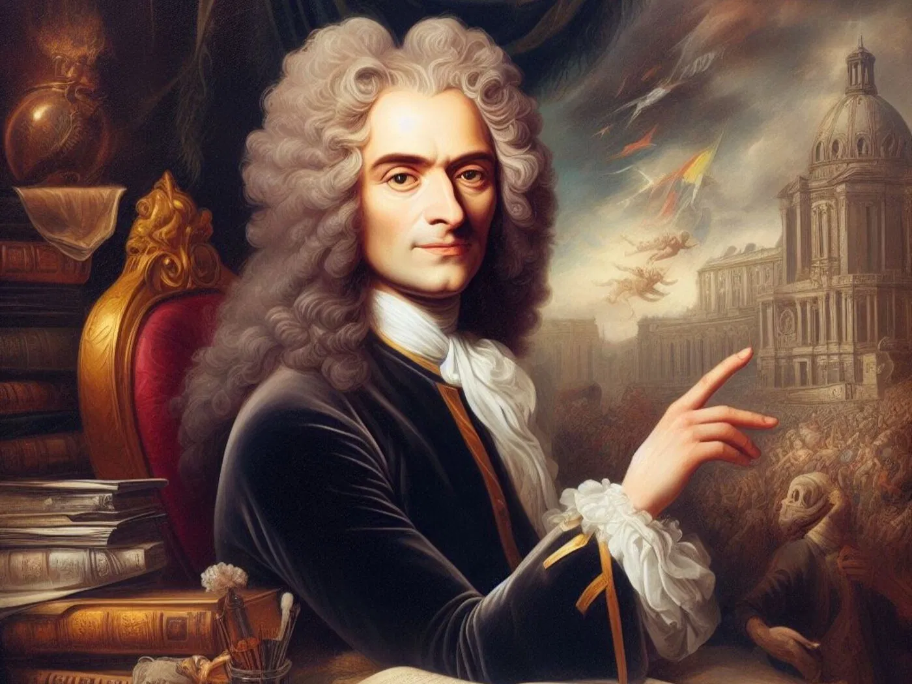

Biografia Voltaire:
Nascido em Paris França no ano de 1694, Estudou no colégio jesuíta Louis-le-Grand, onde recebeu uma sólida formação clássica. Inicialmente, estudou direito, mas sua paixão pela literatura e filosofia o levou a seguir uma carreira intelectual. Conhecido por seu espírito crítico e inteligência, foi um dos principais representantes do Iluminismo, defendendo a tolerância religiosa, a liberdade de expressão e a separação entre Igreja e Estado.

Local de Nascimento:
Mapa em Aproximadamente 1964